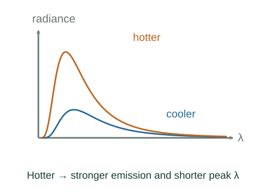

Derive Planck radiation, Wien’s maximum and the T⁴ law
Counting wavevectors with two polarizations gives 8πν²/c³ modes per volume per frequency. Boson thermal occupancy is 1/[exp(hν/()) − 1]. Multiply by hν.
What the symbols mean
Mλ: hemispherical blackbody power per area per wavelength; ν: frequency; x = hν/(); ε: grey emissivity.
When this applies
Equilibrium photon modes in a large cavity, two polarizations, zero photon chemical potential, ideal blackbody or a stated grey-surface approximation.
Developing the argument

Count photon modes and their mean energy
Counting wavevectors with two polarizations gives 8πν²/c³ modes per volume per frequency. Boson thermal occupancy is 1/[exp(hν/()) − 1]. Multiply by hν.
Convert cavity density to outward emission
For an isotropic cavity, integrating the normal velocity over an outward hemisphere yields flux cuν/4. Changing variable ν = c/λ supplies |dν/dλ| = c/λ².
Maximize with respect to wavelength
Set the derivative of ln Mλ to zero. With x = hc/(λkBT), the nonzero root solves 5(1 − exp(−x)) = x, giving x ≈ 4.965114.
Integrate over all frequencies
Change variable to x. Expand 1/(exp(x) − 1) as Σ exp(−nx); the integral of x³exp(−nx) is 6/n⁴. Summing gives π⁴/15.
Apply a grey-surface model
Define σ by the preceding constant. A surface of area A and frequency-independent effective emissivity ε emits εAσT⁴; a large isotropic environment at Tenv supplies absorption εAσTenv⁴ under the grey equilibrium assumptions.
A worked example
Doubling blackbody absolute temperature multiplies total emitted power per area by 16 and halves the peak wavelength.
Derivation behind this calculation ↗A point to keep straight
A peak per unit wavelength is not the same location as a peak per unit frequency; converting spectral variables changes the density.
Check the assumptions and derivation ↗